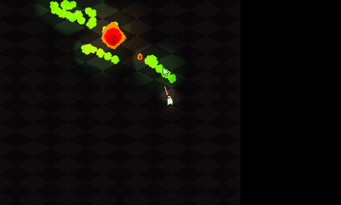

2025-11-02
Daily Log - 1
log
Today was no different than my usual day for the last month, but it got a little better towards the end, which actually explains why this is being written in the first place lol.
I've just been all over the place, too many really good ideas, too much potential, a bit of responsibilities to keep track of, aaannd I find myself overwhelmed, my usual day has been;
- Wake up at like 11AM~1PM
- Obsess over new projects and ideas and the previous days' projects and ideas that I didn't properly work through.
- Not work through them because they're too much and I'm overwhelmed.
- Usually manage to do like 1 or 2 smaller things, which is good.
- Stay up late because I feel like I still have a lot of things I should do, but I actually never do them.
I swear I've been better at handling this stuff than I was before, but oh well.
I usually just write down the ideas in my notes, that seems to help a bit, but recently there have been too many, and I've honestly been letting myself be a little too comfortable, which I think is the main reason why I've gotten stuck in this loop.
Anyways, it's been getting better the last week, I'm more in control of my days, and today, at least towards the end of it, I've actually made some decent progress on my projects.
I managed to get my short form video generator to a good, working, ready version today. To give you some context, it's an automated pipeline that scrapes cybersecurity podcast transcripts, uses AI to condense them into 30-60 second narratives, generates matching visuals, creates voiceovers, assembles everything into vertical videos with captions and a watermark. Basically hit run once and get a complete, upload-ready video.
I actually started on this project last year, when the boom in AI generated short form videos started, I wanted to make my own thing that does it, as I usually do. I chose cybersecurity and its history and incidents is something that I'm very interested in. But I ended up archiving it because I didn't think it was good enough, I couldn't get image gen to work like I wanted it, I was basically pulling random images from picsum, and I really didn't see any benefit from me uploading these videos, monetarily anyways.
Start of this week, a friend of mine mentioned that they were thinking of doing AI short videos, and I was like, heeyy, I actually have something I created that does that, so I pulled it out of the archive, and worked on it throughout the week.
I got image generation to actually work, now each video gets images that are context appropriate that go with the narration, I also improved the system prompt a lot over the course of the week.
Today, I was like, I have to stop stalling and actually start uploading these, they were decent, and even if I wasn't going to make any money with them, they're educational and interesting, and there is potential to use the "brand" for promotions, and hell, maybe it can grow. It's not my intention, but it'd be nice.
I created the accounts, I went with Instagram, Youtube, and Tiktok, I called the "brand" log.security, and I uploaded the first video. I literally just picked a random one from the videos I already generated and uploaded it, but I noticed something when I did, I have to specify metadata for each platform; Youtube needs a title, a description, and tags. Instagram needs a caption with tags. And so does Tiktok. I could do this by hand, but it kind of defeats the whole point of having this automated tool, and more importantly, I'm lazy, lol.
You can actually check out the first video I uploaded here
So I thought, hey I already have the pipeline, I already have the narration being passed around, let's add an extra step to it that takes in the generated narration, calls the LLM again, and spits out a metadata json file that has the platform specific stuff I need.
That worked great, and it actually gives good results. But I've already generated a lot of videos, for those since I don't have the narration available to me, I'm going to have to manually write the captions and tags.
It seems that around 6~9PM is the best times to upload, so I uploaded around 6PM. Not sure if this information is true or not, but that's what I heard, I'll just experiment with it and see for myself. I'm also planning on posting 2 videos a day.
I then switched gears to game development, and FINALLY picked up work on Parry Painter. What's that?
Parry Painter is basically top down 2d Devil Daggers but with parrying as the main mechanic. You can only damage enemies by exploding a goo like substance, this goo does chain reactions so if there are a bunch of goo next to each other exploding one, will explode all the others with it in a chain. The only way to spawn this goo in is by parrying enemy attacks. The parry doesn't deal damage to the enemy, it instead "paints" a trail/area of this goo on the ground.

Now, I've already did a lot of work on the game, months ago, and stopped because of two things;
- I got busy lol
- As I worked on the game, and played it over and over again, I started feeling this dullness emerge, there was something flawed with the game design, and I couldn't really put my finger on it.
So, last week, I opened it up, and I tried to, well, put my finger on it.
It's satisfying to go around, and parry the enemies, but something as I play it (and I've played it a lot), something always felt missing. Here's what happens every time;
I start the game, an Orbiter (A big enemy that orbits around the arena getting closer to the center over time, it spawns Chargers which are a basic enemy that follows the player and attacks when close) spawns, that orbiter spawns 2 Chargers, they come towards me, I parry, the parry feels great! I think, hmm, let me position myself ahead of the orbiter's trajectory and parry the chargers there so I can spawn this trail on its path and when I get enough I can explode it, I do that, it's not bad, okay! A Berzerker (basically a bigger orbiter but with a 2 hit combo it also gets faster when parried) spawns, the only fun thing about it is timing the 2 parries together, other than that it just feels like a charger, Another orbiter is in, it spawns 2 chargers, now I got the Berzerker and the 2 chargers after me, I have two strategies; Parry them, creating a pool of goo around them and explode to kill them all in one felt swoop, or go to the new orbiter and redo the previous thing I did, and that's basically what it always boils down to, sure it's fun to parry and see the goo fly around, and explode it to create the chain reaction, but it feels dull, you always have the same strategy to execute, there is no challenge. And what's worse is that swarms weirdly enough make the game easier, because with the timing of the parry, you can literally mash it and you parry multiple enemies at once and create a massive amount of goo, making it easier to kill them. Enemy attacks also usually don't even reach you, making swarms and enemies in general even more harmless.
I basically wrote a little markdown note (with the help of claude) to try to address the issues, and I managed to addressed a few today;
## 02-11-2025
### Done
- [x] Added 0.75s parry cooldown (adjust based on feel)
- [x] Added parry startup animation so it requires prediction, not just reaction
- [x] Made orbiters spawn way less chargers, it now spawns only one every 30 seconds, before it spawned 2 every 12 seconds.
- [x] Made orbiters spawn 3 chargers max, before it was 4.
### Notes
Parrying feel insanely better, it feels more satisfying and now requires better timing and more skill to pull off.
Now both orbiters and chargers feel a lot better to fight, and move around, before you got instantly swarmed,
and it was dumb and mindless and a lot easier to kill all of them because they give a lot of goo,
now you get a single charger, and try to position yourself and try to understand the timings which acts as a great tutorial too,
then the game hits you with a second charger to make things more interesting and to punish you if you still haven't killed the first one.
Conclusion; it's a little better.
Then, I'm writing this log, it's somehow a lot longer than I expected it to be honestly, it's probably because it's the first one and I have a lot of context to give lol. I'll experiment with the format and see I guess.
If someone, somehow read to this point. First off; are you good? Don't you like have a job or something? Secondly; uhh, thanks I guess, hope my retrospective helps?
END